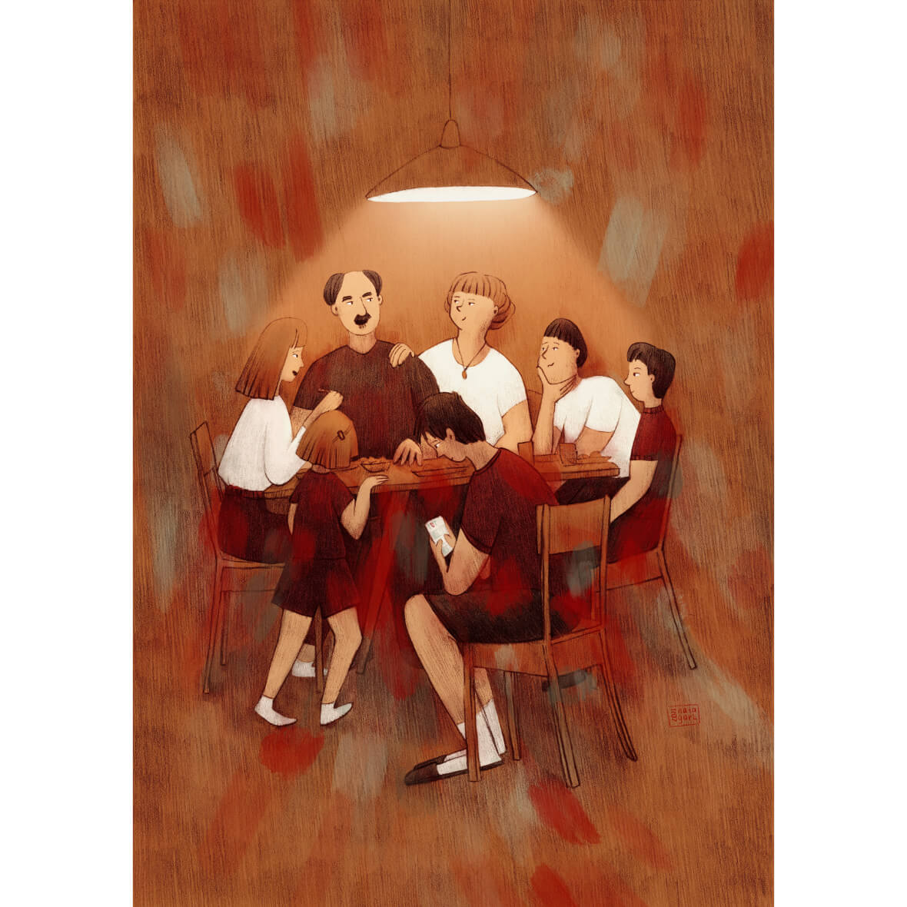
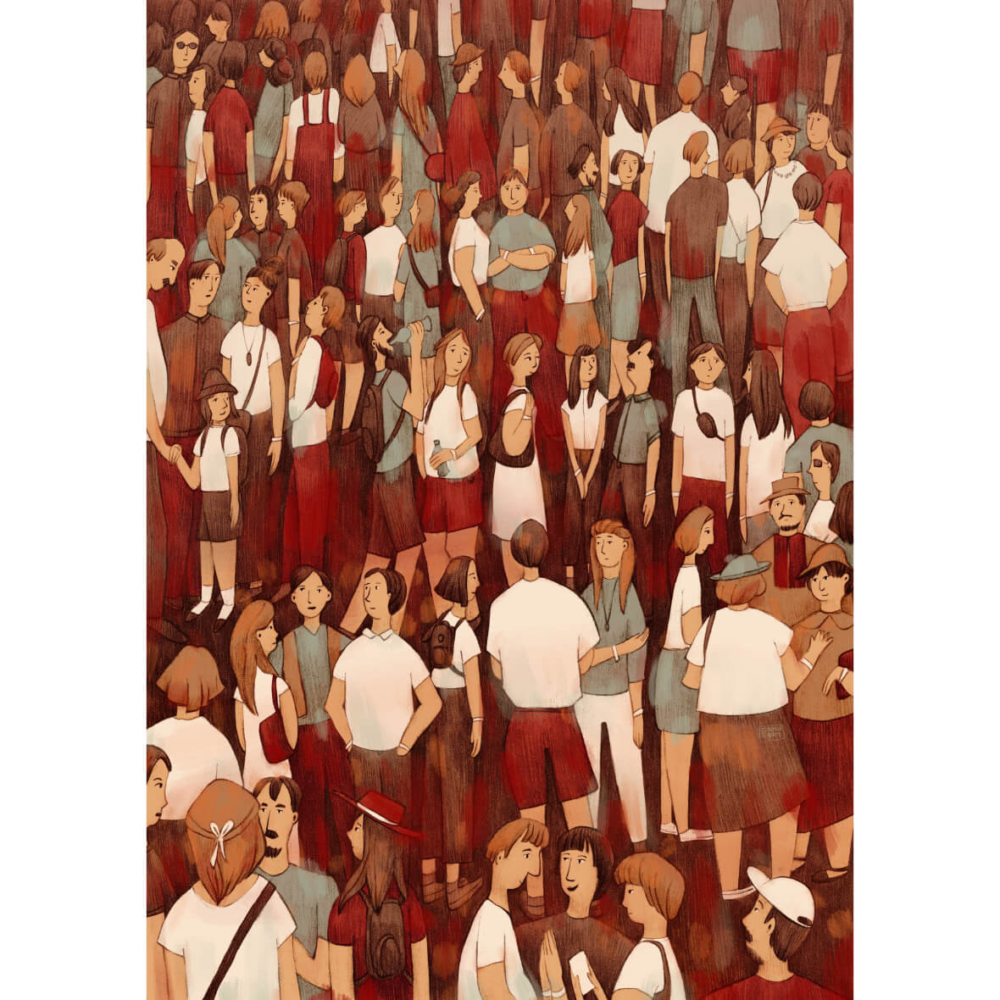
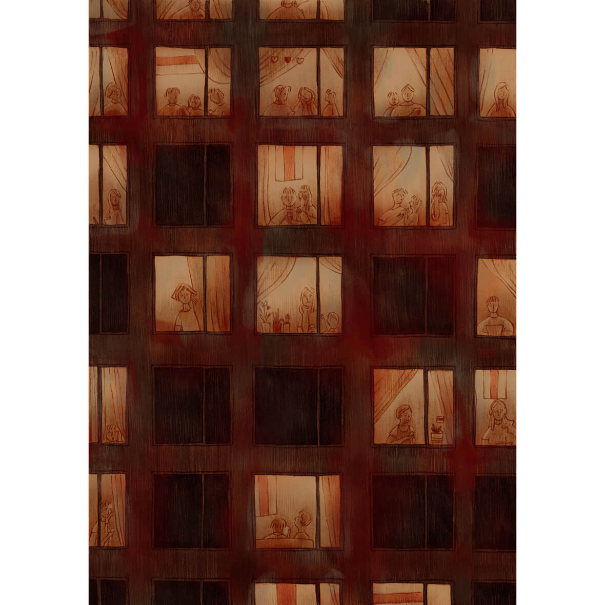
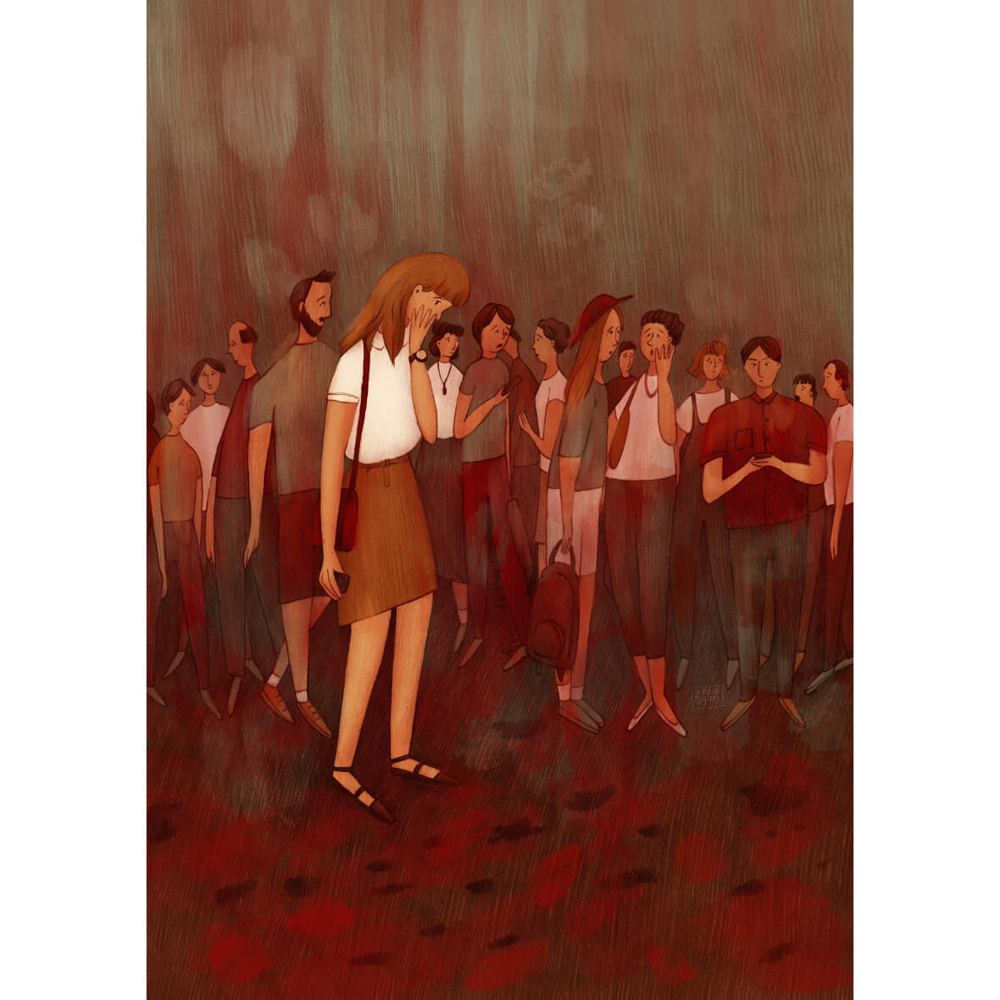
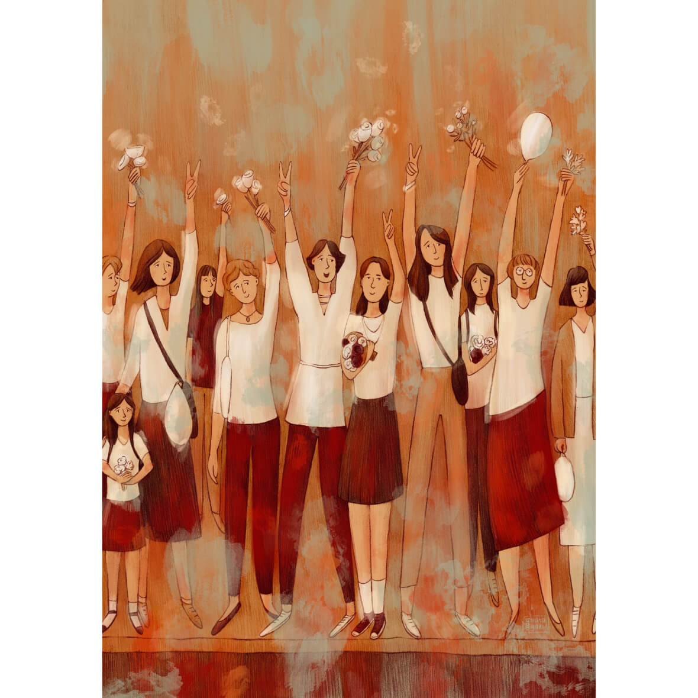
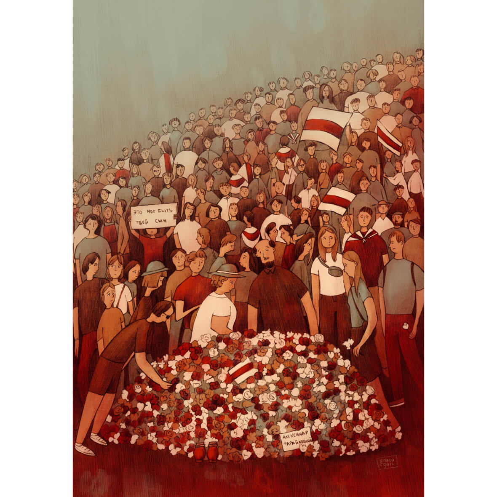
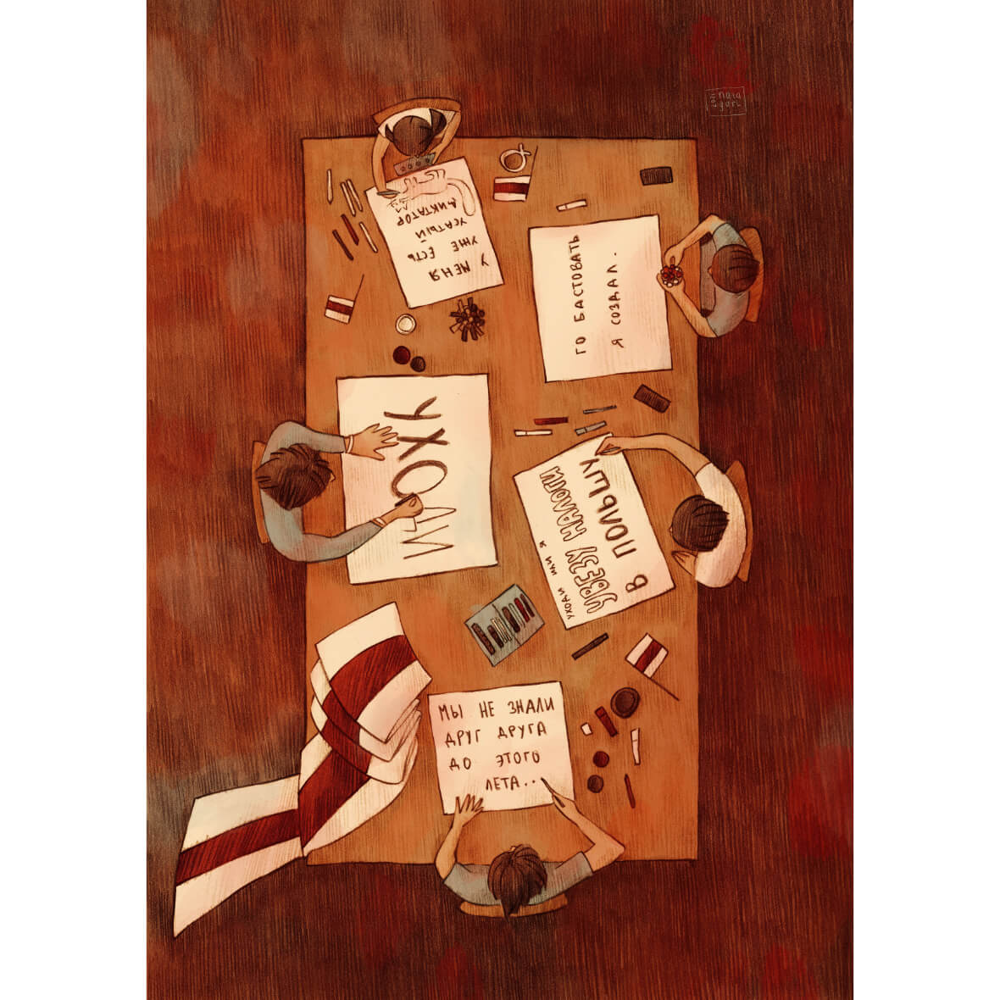
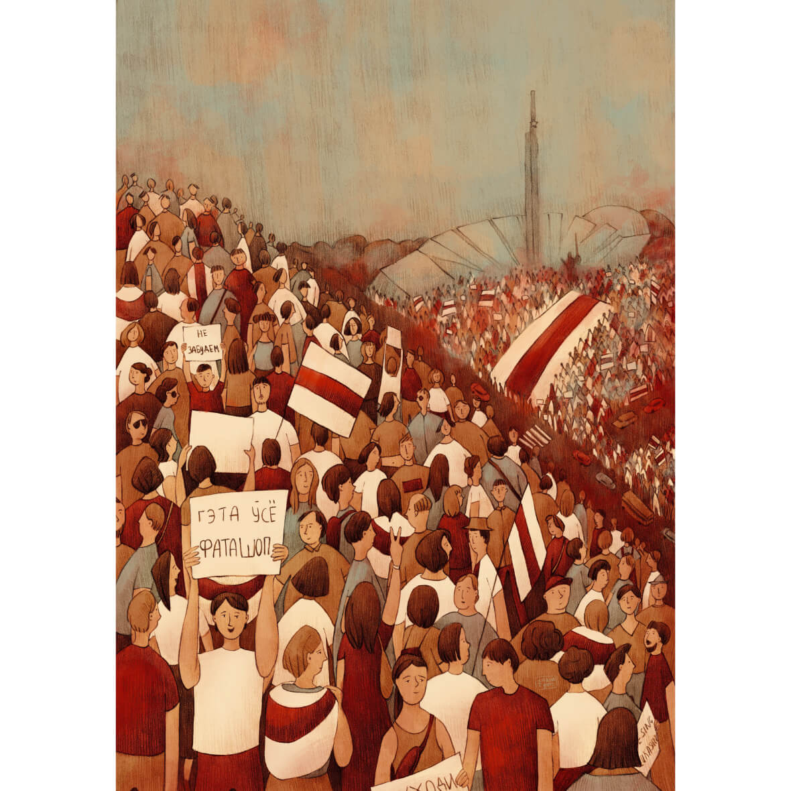
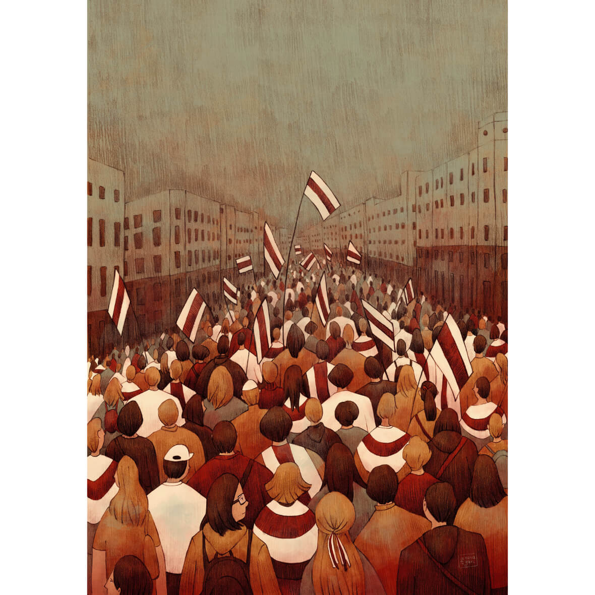
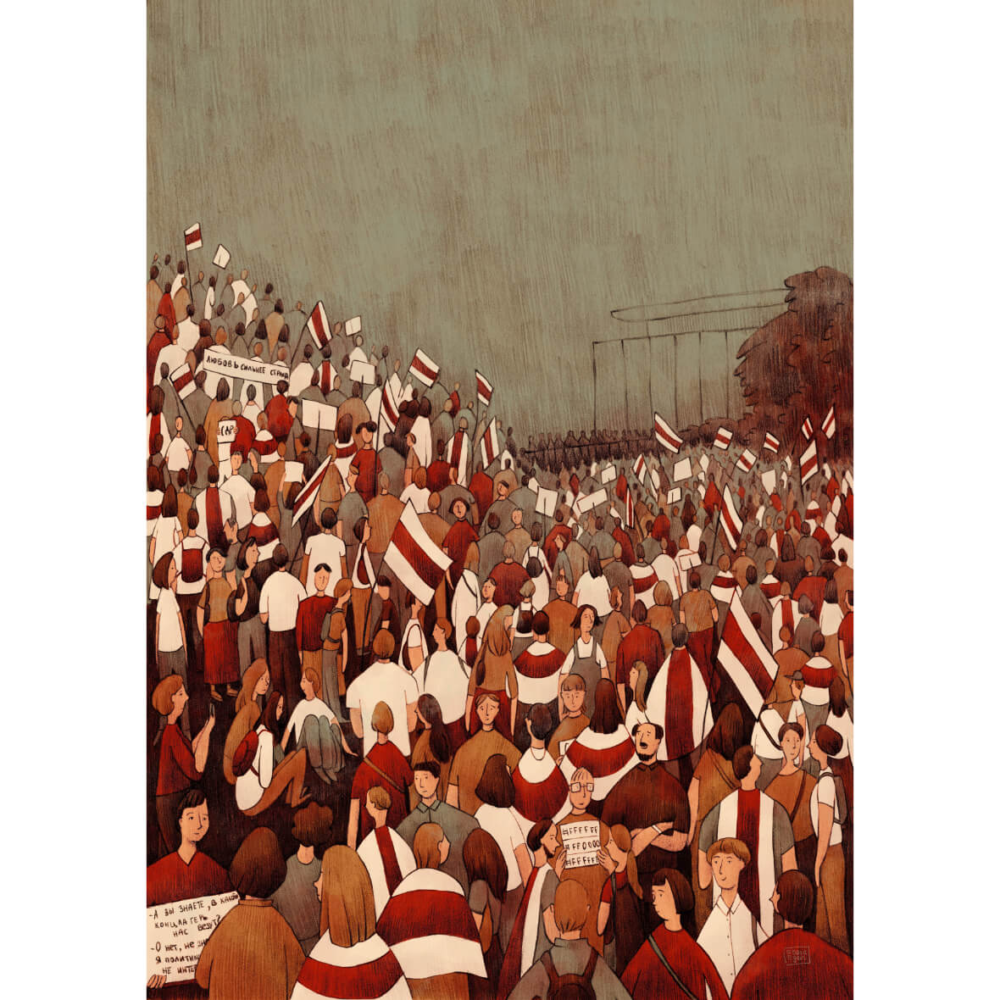

Жнівень
ліпень - жнівень 2021
Пра жнівень 2020 у Мінску.
Класічнае абмеркаванне палітыкі на кухні
першыя дні жніўня
Чарга, каб зрабіць выбар
9 жніўня
Калі і на ўскрайку города былі чутны выбухі
ноч з 9 на 10 жніўня
Калі разам з інтэрнэтам з’явіліся і навіны
10 - 12 жніўня
Калі ланцугі салідарнасці сталі масавымі
13 жніўня
Пушкінская і смутак
15 жніўня
Плакаты
з сярэдзіны жніўня і далей
Стэла і мора людзей
16 жніўня
Вольны праспект Незалежнасці
23 жніўня
Дзень народзінаў
30 жніўня